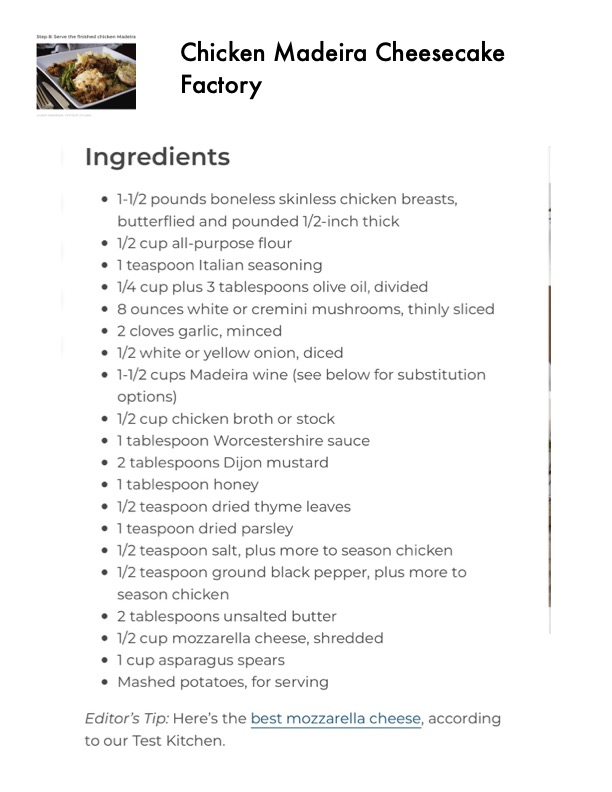

Chicken Madeira (Cheesecake Factory Style)

Original cookbook page 306
A Cheesecake Factory copycat recipe featuring boneless chicken breasts with a rich Madeira wine sauce made with mushrooms, garlic, and onions. Topped with mozzarella cheese and served with asparagus and mashed potatoes.
Prep: 20 minutes • Cook: 40 minutes • Total: 1 hour
Ingredients
- Boneless chicken breasts, butterflied and pounded thin
- Flour for dredging
- Italian seasoning blend
- 1/4 cup olive oil, plus 2 tablespoons
- Diced onions
- Garlic, minced
- Mushrooms, sliced
- Worcestershire sauce
- Dijon mustard
- Honey
- Dried thyme
- Dried parsley
- Madeira wine
- Chicken broth/stock
- Butter
- Salt and pepper to taste
- Shredded mozzarella cheese
- Asparagus spears for serving
- Mashed potatoes for serving
Instructions
- Combine the flour and Italian seasoning on a large plate. Dredge the butterflied and thinly pounded chicken breasts in the mixture to evenly coat on all sides.
- In a large skillet, warm 1/4 cup of olive oil over medium heat. When it begins to shimmer, add the chicken. Cook the chicken on both sides until golden and crisp; about 4–5 minutes per side. Remove the chicken to a paper towel-lined, oven-safe plate and repeat until all of the chicken is fully cooked. Transfer the chicken to a low oven to keep warm while you prepare the sauce.
- In the same skillet used to cook the chicken, add 2 tablespoons of olive oil. When the oil begins to shimmer, add the diced onions. Sauté until softened, 3-4 minutes, and then add the garlic and mushrooms. Sauté until the garlic is fragrant and mushrooms have softened; about 4-5 minutes.
- Add the Worcestershire sauce, Dijon mustard, honey, thyme and parsley to the pan and stir. Deglaze the pan with the Madeira wine and chicken stock, scraping the bottom of the pan to release any stuck-on bits. Bring the sauce to a strong simmer and then reduce the heat to medium-low.
- Let the sauce simmer until the wine reduces by half, about 20 minutes. The sauce will thicken and the flavors will become concentrated. When the sauce has reached the desired consistency, stir in the butter until melted and then season with salt and pepper, to taste.
- Return the chicken to the pan and top with mozzarella cheese. Serve with asparagus spears and mashed potatoes.
📝 Recipe Notes
Multi-page recipe combined from pages 306-309. Cheesecake Factory copycat. Photos by Lauren Habermehl for Taste of Home. Key is patience during sauce reduction - let it simmer the full 20 minutes for best flavor concentration.
Recipe #306 from collection